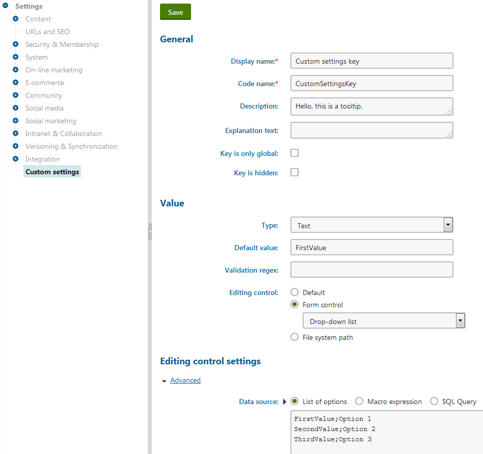
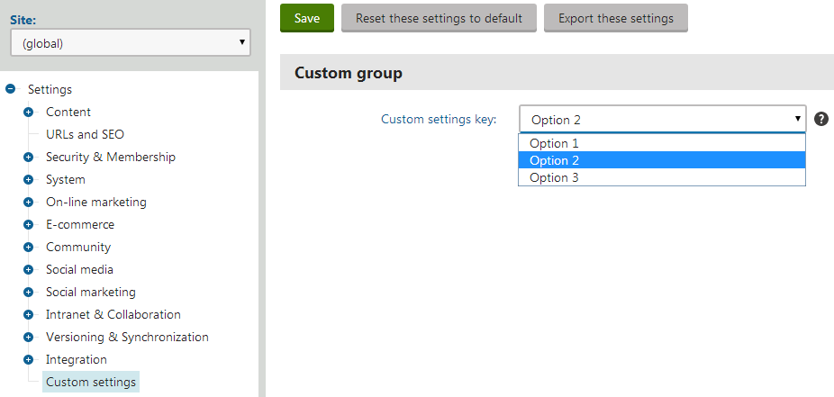

Adding custom website settings
Kentico allows you to create your own settings and use them to configure custom parts of the application. You can work with the values of custom settings in two ways:
Creating a custom module
Each setting in the system must belong under a module. You cannot create custom settings for the default modules included in Kentico. To add custom settings, first create a custom module:
Open the Modules application.
Click New module.
Type a display name for the module (for example Custom settings).
Click Save.
You do not need to create any classes, permissions or user interface for the module — you can use an empty module as a container for custom settings.
Alternatively, you can use the default Custom module (only recommended for ad-hoc, non-transferable settings).
Defining custom settings
The system organizes settings according to the following hierarchy:
Categories – represent separate pages in the settings interface. You can create categories under other categories in a tree structure.
Groups – divide categories into sub-sections. Groups make it easier to navigate in categories that contain a large number of setting keys.
Keys – individual settings.
To create settings, open the Modules application, edit ( ) one of your custom modules and select the Settings tab:
) one of your custom modules and select the Settings tab:
Click New category (
 ).
).Type a Display and Code name for the category.
(Optional) You can set the category's icon image through the Icon path property. Enter the path to the image, either as a full relative path from the web project root (e.g. ~/App_Themes/Default/Images/CMSModules/list.png) or a short path beginning under the App_Themes Images folder (e.g. CMSModules/list.png).
Click Save.
On the Settings sub-tab of the category and click New settings group.
Type a Display and Code name for the group.
Click Save.
Return to the Settings tab of the category and click New settings key inside the group.
Fill in the properties of the settings key:
General
Display name
Sets the caption displayed next to the key in the settings interface.
Code name
Serves as a unique identifier for the setting (for example in the API).
Description
Sets a tooltip that the system displays in the settings interface when hovering over the key's caption or help icon. You can describe the purpose of the setting, allowed values, etc.
Explanation text
Adds text that the system displays directly below the setting in the settings interface (Settings application).
Key is only global
If checked, all sites in the system share the same value for the key. You can only see global keys when editing (global) settings.
Key is hidden
If checked, the system does not display the key in the Settings application. You can use hidden settings to store the values of configuration options that you set through the API.
Value
Type
________________Selects the data type of the setting key's value:
Boolean (Yes/No)
Integer number
Floating-point number
Text
Long text
The settings interface validates the entered value against the selected type.
Default value
The default value of the key. Administrators can reset settings to their default value by clicking Reset these settings to default in the settings editing interface.
Validation regex
Allows you to define custom validation rules for the setting's value through a regular expression.
Editing control
Specifies the interface element used for editing the key's value in the settings form.
Default – the setting key uses a basic textbox or checkbox (for Boolean values) interface.
Form control – allows you to choose one of the form controls registered in the system. You can configure the parameters of the selected form control in the Editing control settings section.
File system path – directly specifies the path to a user control file in the web project, for example: ~/CMSFormControls/SimpleCountrySelector.ascx

Adding a custom settingClick Save.
Administrators (and users with the Configure settings permission for the CMS module for non-global settings) can now configure the value of the custom setting in the Settings application.

Editing the value of a custom setting
Managing custom settings
To manage your custom settings, edit the parent module in the Modules application, and select the Settings tab. The settings hierarchy here defines the structure of the Settings application's interface.
Restrictions
You cannot modify the settings under the default modules in Kentico.
You can only work with the settings of the module that you are editing (settings of other modules are grayed out).
You can perform the following actions:
Edit the properties of setting categories (names and icon path) on the General tab.
Click Edit ( ) to modify the properties of setting keys or groups.
To move an item within the settings hierarchy, edit the item and select the target location through the Parent category or Group property.
Click Up ( ) or Down ( ) to change the order of categories, groups or setting keys.
Click Delete category (
 ) or Delete (
) or Delete ( ) to remove setting items.
) to remove setting items.
Loading the values of settings in code
To make settings affect the behavior of websites (or the entire application), you need to work with the setting values in your custom code. For example in event handlers, web parts, modules or any other components. You can load values of both the default and custom settings.
Call the following methods of the SettingsKeyInfoProvider class according to the data type that you wish to use for the setting's value:
GetBoolValue
GetValue (for string values)
GetIntValue
GetDecimalValue (usable with settings of the Floating-point number type)
GetDoubleValue (usable with settings of the Floating-point number type)
The methods accept a string parameter that identifies the setting in the following format: <site code name>.<settings key code name>
Note: When loading global-only settings, only enter the code name of the required settings key in the parameter.
For example:
using CMS.DataEngine;using CMS.SiteProvider;...string value = SettingsKeyInfoProvider.GetValue(SiteContext.CurrentSiteName + ".CMSDefaultAliasPath");Getting setting values in macro expressions
Note: Only users with the Global administrator privilege level can create macros that load the values of settings. The Configure settings permission for the CMS module is not sufficient for this purpose.
Macro expressions allow you to:
Dynamically insert the values of settings into most fields in the Kentico administration interface
Work with settings in macro conditions or other expressions with advanced logic
You can load values of both the default and custom settings.
Use the following expression to get setting values inside macros: Settings.<settings key code name>
For example:
{% Settings.CMSStoreFilesInFileSystem %}The macro returns the setting's value for the currently running site (or the global value for global-only settings). If you need to access the global value of a setting, you can use the following macro expression: GlobalObjects.SettingsKeys.<settings key code name>.KeyValue